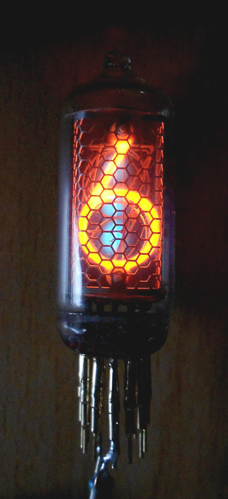
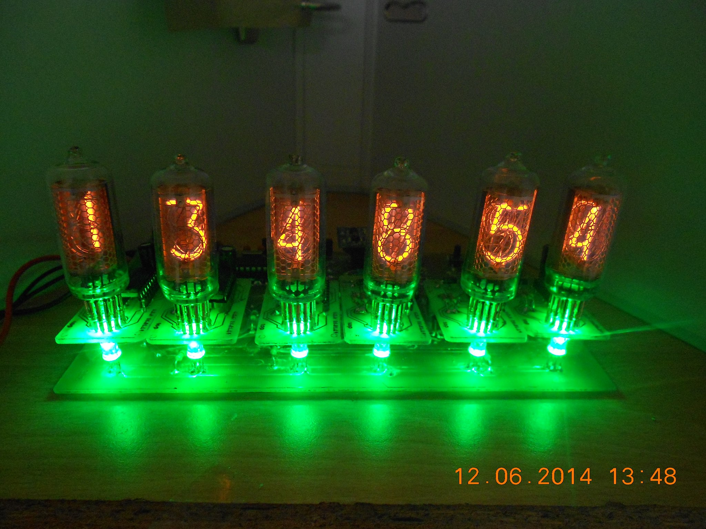

DIYElectronics

Horloge a tube nixie
Présentation
Mon horloge a tube nixie1 est composée de 6 tube IN-8 Ressemblant a ceci :
Cette horloge au look vintage 2 aura pour but d'afficher l'heur et la date de façon intermitante
Caractèristique
Doté de 6 tube nixie IN-8, l'horoge affiche l'heur et la date au format hh:mm:ss et DD/MM/YY
En desous de chaque tube est logé une LED3 RGB permettant d'iluminé avec 8 couleurs diferente ou avec une animation
de couleur (fondu de couleurs) gerer avec un PWM4 logiciel
Il est possible de la configurer grace au 3 bouton poussoir (conffiguration, +, -)
Utilisation
-
Utilisation des LED RGB
-
Réglage de la date et de l'heur
- secondes
- minutes
- heurs
- jours
- mois
- années
Si vous souhaiter avoir un fondu de couleur, appuyer 5sec sur le bouton configuration
Si vous voulez avoir une des 8 couleurs, appuyez sur les bouton + et -
Appuyez sur le bouton configuration, vous passerez automatiquement en mode réglage heur et date
Les digits qui clignote, sont seu en cours de réglage.
Voici l'orde de réglage :
Rendu final
Voici le rendu final de l'horloge :
- 1tube nixie
- Un tube nixie est un composant électronique utilisé pour l'affichage de chiffres et d'autres informations. Il est constitué d'un tube de verre qui contient une anode en fil grillagé, et plusieurs cathodes qui ont la forme de symboles à afficher. Le tube est rempli d'un gaz à basse pression, d'habitude composé principalement de néon et souvent un peu de mercure et/ou d'argon (on parle de mélange de Penning). Lorsqu'on applique une tension sur une cathode, celle-ci s'entoure d'un halo orange dû aux décharges dans le gaz.
- 2vintage
- mot anglais signifiant ancien, d'époque
- 3LED
- Une diode électroluminescente (DEL en français, ou LED, de anglais : Light-Emitting Diode), est un dispositif opto-électronique capable d’émettre de la lumière lorsqu’il est parcouru par un courant électrique. Une diode électroluminescente ne laisse passer le courant électrique que dans un seul sens (le sens passant, comme une diode classique, l'inverse étant le sens bloquant) et produit un rayonnement monochromatique ou polychromatique non cohérent à partir de la conversion d’énergie électrique lorsqu'un courant la traverse.
- 4PWM
- La modulation de largeur d'impulsions (MLI ; en anglais : Pulse Width Modulation, soit PWM ), est une technique couramment utilisée pour synthétiser des signaux continus à l'aide de circuits à fonctionnement tout ou rien, ou plus généralement à états discrets.